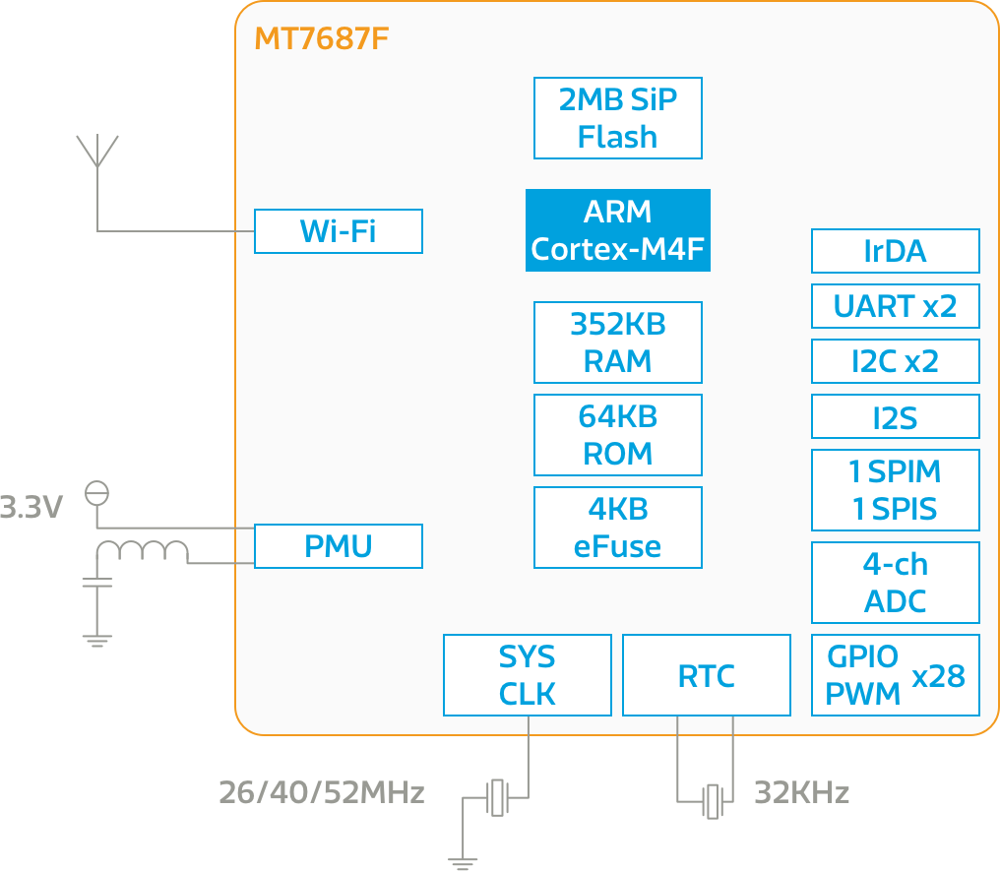

MT7687
概述
聯發科技 MT7687F 是高度整合的系統單晶片，包含一個微控制器，低功耗 1T1R 802.11n 2.4GHz Wi-Fi 子系統，以及 PMU。請查看比較表格以了解不同智慧家庭晶片間的差異。
主要功能
-
具備 4Kbit eFuse，可存放裝置特定資訊和射頻校準資料
-
高度整合的射頻 + 微控制器 + 記憶體
-
低功耗的 RTC 模式
微控制器為含浮點運算功能的 ARM Cortex-M4，帶有內置的 SRAM/ROM 和串列快閃記憶體。它支援許多週邊介面，包括 UART、I2C、SPI、I2S、PWM、IrDA 和 ADC。
Wi-Fi 子系統支持 1T1R 802.11b/g/n 無線協定、基帶和 MAC，含有一個可以完全卸載微控制器運算負擔的網路處理器，旨在滿足低功耗和高輸送量的應用程式。
